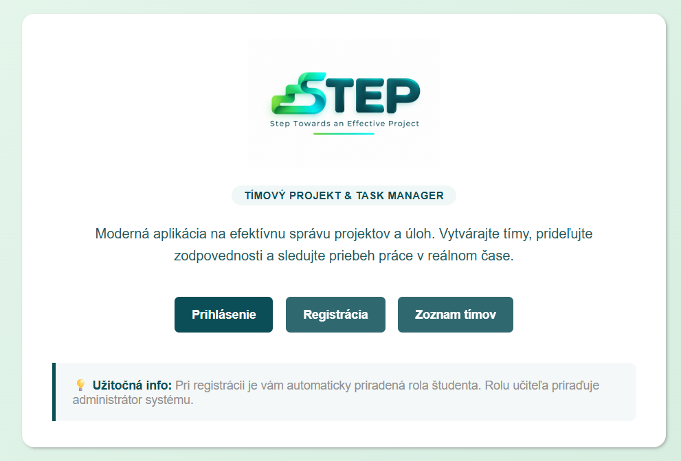
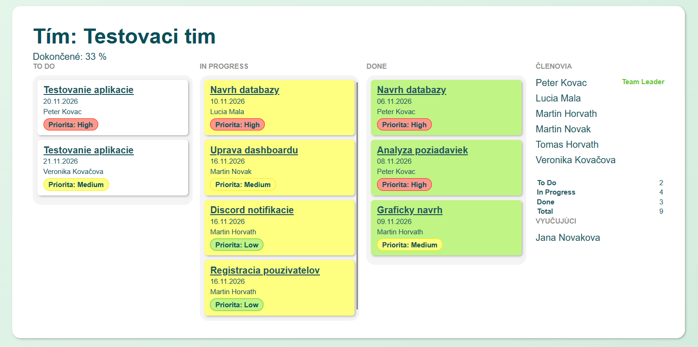
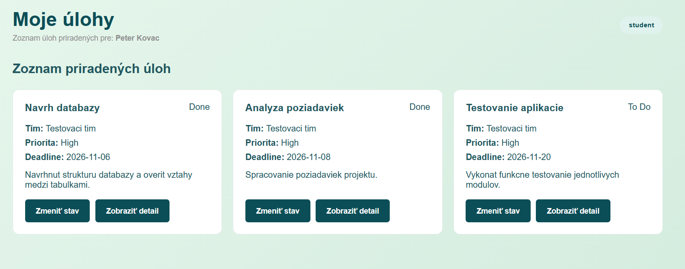
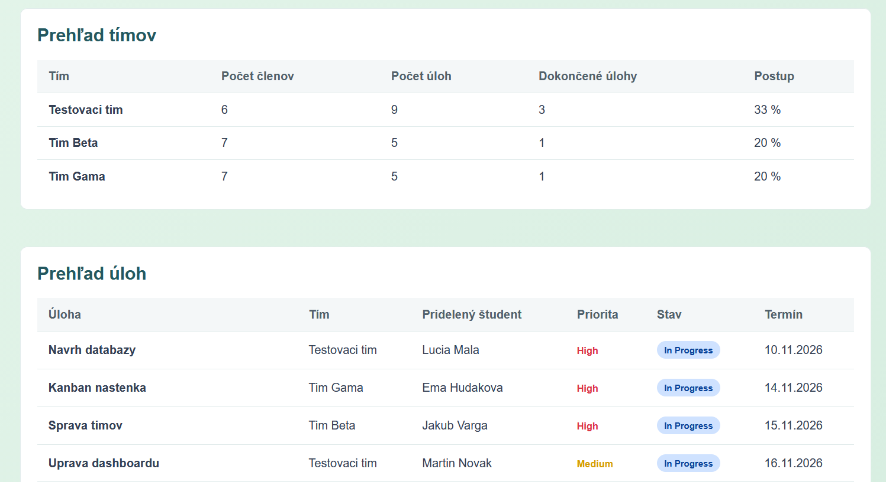
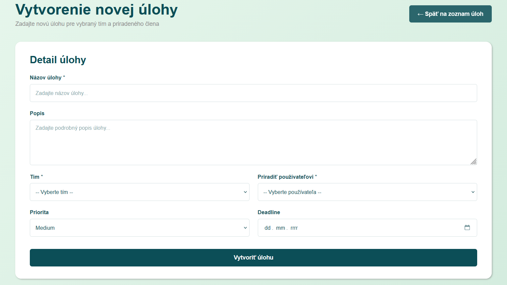
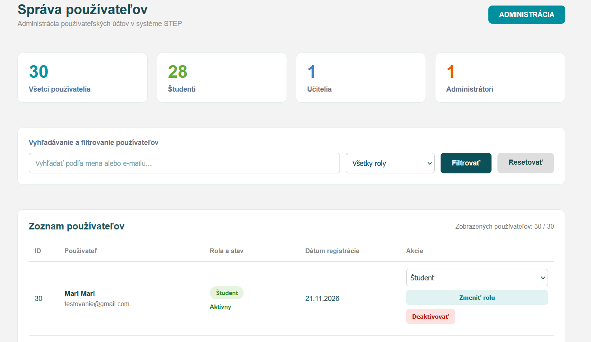

O aplikácii
Čo je STEP a pre koho je
STEP je webová aplikácia na riadenie študentských tímových projektov. Pomáha tímu rozdeliť si prácu, sledovať, čo sa práve robí, a mať všetko na jednom mieste.
Je určená pre učiteľa a študentov predmetu Tímový projekt. Študenti v nej plánujú a sledujú svoju prácu, učiteľ má prehľad o všetkých tímoch.
Hlavné funkcie
- vytváranie tímov
- Kanban nástenka so stĺpcami To Do / In Progress / Done
- prideľovanie úloh členom tímu
- sledovanie aktivity
- notifikácie do Discordu
- prehľad tímov pre učiteľa
Použité technológie
- HTML a CSS – štruktúra a vzhľad stránok
- JavaScript – interaktivita (napr. Kanban nástenka)
- PHP – logika na strane servera
- PostgreSQL / MySQL – databáza
Náhľady aplikácie
Ukážky aktuálneho rozhrania a hlavných obrazoviek systému STEP. Kliknutím na obrázok otvoríš náhľad v plnej veľkosti:






Prototyp
Odkaz na prototyp pribudne neskôr.